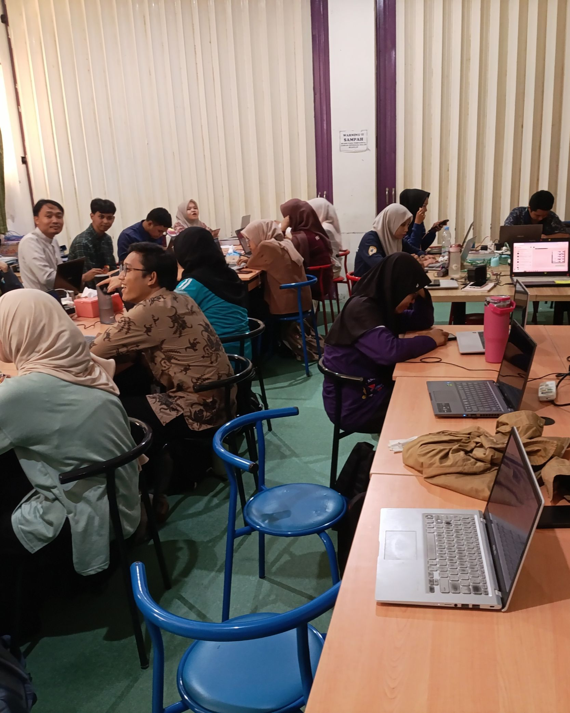

Refleksi Perkuliahan Semester 1
6 Mata Kuliah Inti Semester 1: Fondasi Filosofi KHD, Pemahaman Peserta Didik, Pembelajaran Mendalam (UbD), Sosiokultural, Growth Mindset, & PPL Terbimbing di SMKN 1 Banjarmasin.

Filosofi Pendidikan dan Pendidikan Nilai
Rekonstruksi paradigma pengajaran Informatika dari sekadar instruksi teknis mekanis menuju pendidikan humanis yang menuntun kodrat alam & kodrat zaman murid sesuai Sistem Among Ki Hadjar Dewantara.
- ✓Sistem Among KHD (Ing Ngarso Sung Tulodo, Ing Madyo Mangun Karso, Tut Wuri Handayani)
- ✓Kodrat Alam Budaya Banjar & Kodrat Zaman Era AI
- ✓Transfer of Values & Keteladanan Etika Digital di Lab Komputer
Mata kuliah ini memberikan fondasi filosofis yang sangat mendasar bagi peran saya sebagai calon guru Informatika di SMKN 1 Banjarmasin. Sebelum mendalami materi ini, saya cenderung memandang pengajaran Informatika secara...
Perubahan nyata yang saya terapkan dalam praktik mengajar di kelas X-B DKV dan X-C DKV adalah: • Pergeseran Paradigma Mengajar: Mentransformasi pendekatan dari transfer of knowledge teknis semata menuju transfer of value...
Pemahaman tentang Peserta Didik dan Pembelajaran
Pemetaan kesiapan belajar (Learner Profiling) 35 murid kelas X-B DKV SMKN 1 Banjarmasin ke dalam kategori Perintis, Cakap, dan Mahir melalui penugasan praktikum bertingkat (Tiered Assignment).
- ✓ZPD & Scaffolding (Piaget & Vygotsky)
- ✓Psikososial Remaja SMK (Erik Erikson)
- ✓Diferensiasi Konten, Proses, dan Produk Visual DKV
Mata kuliah ini memiliki relevansi langsung dengan realitas yang saya hadapi sehari-hari saat mengajar kelas X-B DKV dan X-C DKV di SMKN 1 Banjarmasin. Di dalam kelas kejuruan, murid datang dengan latar belakang kognitif...
Langkah perbaikan konkret yang saya wujudkan di kelas X-B DKV dan X-C DKV meliputi: • Melakukan Pemetaan Kesiapan Belajar Rutin: Melaksanakan asesmen awal sebelum topik pengolahan data dimulai, memetakan 35 murid kelas X...
Pembelajaran Mendalam dan Asesmen Dasar
Transformasi dari surface learning menuju Deep Learning (Berkesadaran, Bermakna, Menggembirakan) menggunakan alur mundur Understanding by Design (UbD) dan Tripartit Asesmen.
- ✓Prinsip 3B: Mindful, Meaningful, Joyful Learning
- ✓Backward Design (Understanding by Design / UbD)
- ✓Dataset Nyata Elevasi Air Waduk Riam Kanan & Exit Ticket
Mata kuliah ini merevolusi pemahaman saya mengenai hakikat pembelajaran dan penilaian dalam bidang Informatika. Selama ini, pelajaran TIK kerap terjebak dalam surface learning (belajar di permukaan), di mana murid hanya ...
Perubahan nyata yang saya terapkan pada pembelajaran TIK kelas X-B DKV dan X-C DKV di SMKN 1 Banjarmasin adalah: • Menerapkan Backward Design secara Disiplin: Merumuskan modul ajar dengan diawali Pertanyaan Esensial (mis...
Perspektif Sosiokultural dalam Pendidikan Indonesia
Menjembatani kesenjangan akses perangkat digital di rumah dengan mengoptimalkan laboratorium sekolah sebagai ruang kesetaraan, tutor sebaya heterogen, dan Culturally Responsive Teaching.
- ✓Ekologi Belajar (Bronfenbrenner) & Modal Kultural (Bourdieu)
- ✓Penghapusan PR Berbasis PC bagi Murid Tanpa Laptop
- ✓Integrasi Konteks Sungai & Pasar Terapung Banjar (CRT)
Mata kuliah ini memperluas wawasan saya bahwa ruang kelas di sekolah tidak pernah berdiri di ruang hampa yang terisolasi dari lingkungan sosialnya. Pendidikan selalu terikat erat dengan latar belakang ekonomi keluarga, m...
Aksi nyata yang saya terapkan di lingkungan SMKN 1 Banjarmasin adalah: • Mengoptimalkan Laboratorium Sekolah sebagai Ruang Kesetaraan: Menjamin seluruh penugasan praktikum berbasis perangkat lunak diselesaikan tuntas di ...
Pola Pikir Bertumbuh dalam Pembelajaran
Membangun resiliensi mental murid kejuruan saat menghadapi error sintaks/formula (#VALUE!, #N/A) melalui apresiasi proses (Process Praise), The Power of Yet, dan zona aman berbuat salah.
- ✓Teori Growth Mindset (Carol Dweck) & Neuroplastisitas
- ✓Productive Failure & Budaya 'Merayakan Error' di Lab
- ✓Reframing Respon Guru & Kekuatan Kata 'BELUM' (The Power of Yet)
Mata kuliah ini menyentuh aspek psikologis yang sangat krusial dalam pembelajaran Informatika di SMK. Belajar komputasi, logika pemrograman, dan pengolahan data identik dengan trial-and-error, pesan kesalahan (error warn...
Perubahan nyata yang saya budayakan di laboratorium komputer SMKN 1 Banjarmasin adalah: • Mengubah Pola Umpan Balik (Reframing Feedback): Memuji proses penalaran murid: 'Saya bangga dengan ketekunanmu melacak sel yang sa...
Praktik Pengalaman Lapangan (PPL) Terbimbing
Penerapan siklus Lesson Study (Plan, Do, See), manajemen laboratorium komputer real-time (hands-off-mouse rules), serta skenario kontingensi unplugged saat menghadapi kendala teknis/listrik.
- ✓Siklus Lesson Study (Plan, Do, See) bersama Guru Pamong & DPL
- ✓Manajemen Waktu 3 JP (120 Menit) & Aturan Disiplin Layar
- ✓Adaptive Instructional Contingency (Plan B Unplugged)
PPL Terbimbing di SMKN 1 Banjarmasin merupakan laboratorium nyata yang menyatukan seluruh mata kuliah teoritis, filosofi KHD, pemahaman peserta didik, dan kerangka Deep Learning, ke dalam panggung praktik mengajar sesung...
Transformasi diri yang saya alami setelah menjalani siklus PPL Terbimbing adalah: • Menjadi Calon Guru yang Taktis dan Adaptif: Tidak lagi mudah panik saat kendala teknis terjadi di laboratorium, melainkan langsung menga...